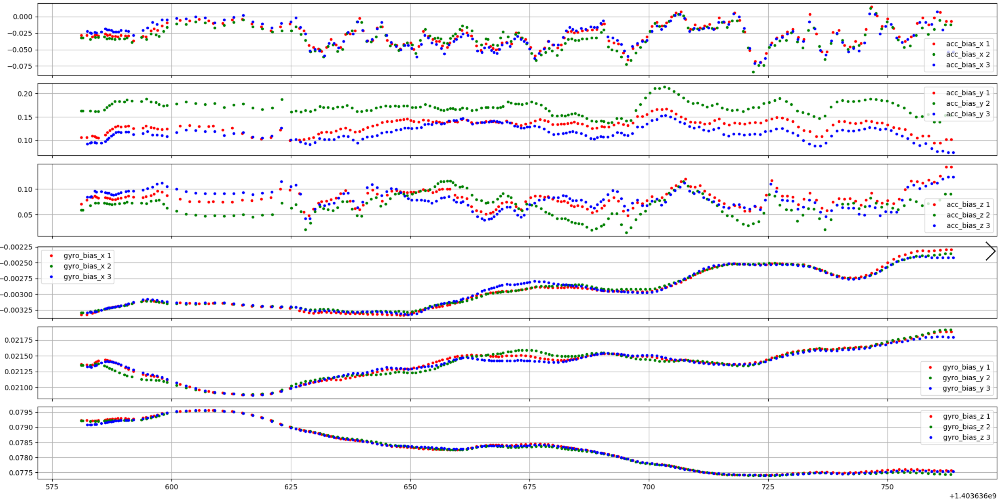

Front-End Benchmark Optical Flow vs. ORB3
Summary
Here is the benchmark among origin ORB3, optical flow track for non-keyframe, dead reckoning for non-keyframe:
The optical flow request less keyframe but have similar performance on the easy dataset.
The optical flow is unable to handle the intense motion and will lost track.
MH_03_MEDIUM and V2_02_MEDIUM have track lost.
The trajectories of ORBSLAM3 (origin, flk, dead reckoning) are changed for each execution, maybe have different IMU bias estimation status of current map.
The origin ORB slam3 has similar ATE performance as the paper (Orb3 reported values are the median after 10 executions.)
Discussion: What's the main contribution from non-keyframe towards keyframe?
Based on the tracking thread, each last frame will pass its bias and PVQ to current frame so that the current IMU pre-integration and current PVQ can be calculated (see Tracking::PredictStateIMU and Tracking::PreintegrateIMU).
If there is no non-keyframe at all, then the error of IMU pre-integration between each keyframe will be large and the visual feature may not be able to pull back the drift pose.
If all non-keyframe uses dead reckoning, then the motion information(P, V, Q, Bias) could be transferred to next frame. Since there is no visual feature to constraint the dead reckoning for non-keyframe, after a long time, the visual feature of keyframe may not be able to pull back the drift pose either.
In general, the front-end with optical flow tracking constraint shall be better than pure dead reckoning method.
Maybe there are two variants,
the optical flow module shall have high quality of feature tracking otherwise it will make result worse.
if the time interval between each non-keyframe is short enough, then it's front-end may have the same performance against optical flow version.
Benchmark Table
|
Seq |
Trajectory Plot |
FLK ATE/RPE |
ORB ATE/RPE |
DR ATE/RPE |
|
MH_01_EASY |
|
Key Frame Number: 183 |
Key Frame Number: 349 Orb3 Paper ATE Pos: 0.062 36382 poses in MH_01_easy => length of 80.63 meters |
Key Frame Number: 169 |
|
MH_02_EASY |
|
Key Frame Number: 165 |
Key Frame Number: 327 Orb3 Paper ATE Pos: 0.037 29993 poses in MH_02_easy => length of 73.47 meters |
Key Frame Number: 147 |
|
MH_03_MEDIUM |
|
Key Frame Number: 206 |
Key Frame Number: 272 Orb3 Paper ATE Pos: 0.046 26302 poses in MH_03_medium => length of 130.93 meters |
Key Frame Number: 136 |
|
V1_01_EASY |
|
Key Frame Number: 173 |
Key Frame Number: 269 Orb3 Paper ATE Pos: 0.049 28712 poses in V1_01_easy => length of 58.59 meters |
Key Frame Number: 146 |
|
V2_02_MEDIUM |
|
Key Frame Number: 225 |
Key Frame Number: 301 Orb3 Paper ATE Pos: 0.021 23091 poses in V2_02_medium => length of 83.23 meters |
pure dead reckoning is too bad |
Open Point: different result on the same dataset
Summary:
the acc bias drift exist among all version of ORBSLAM.
the little acc bias drift (±0.02) will not cause big different result.
The figure below shows the results of FLK-SLAM at different running time on the MH_01_easy,
|
Trajectory and Bias Plotting |
Test 1 |
Test 3 |
Test 6 |
|
36382 poses in MH_01_easy(GT) => length of 80.63 meters
|
====================================== |
====================================== |
====================================== |
The figure below shows the results of dead reckoning SLAM at different running time on the MH_01_easy,
|
Trajectory and Bias Plotting |
Test 1 |
Test 2 |
Test 3 |
|
36382 poses in MH_01_easy => length of 80.63 meters  |
====================================== |
====================================== |
====================================== |
The figure below shows the results of original ORB3 SLAM at different running time on the MH_01_easy,
|
Trajectory and Bias Plotting |
Test 1 |
Test 2 |
Test 3 |
|
36382 poses in MH_01_easy => length of 80.63 meters
|
====================================== |
====================================== |
====================================== |